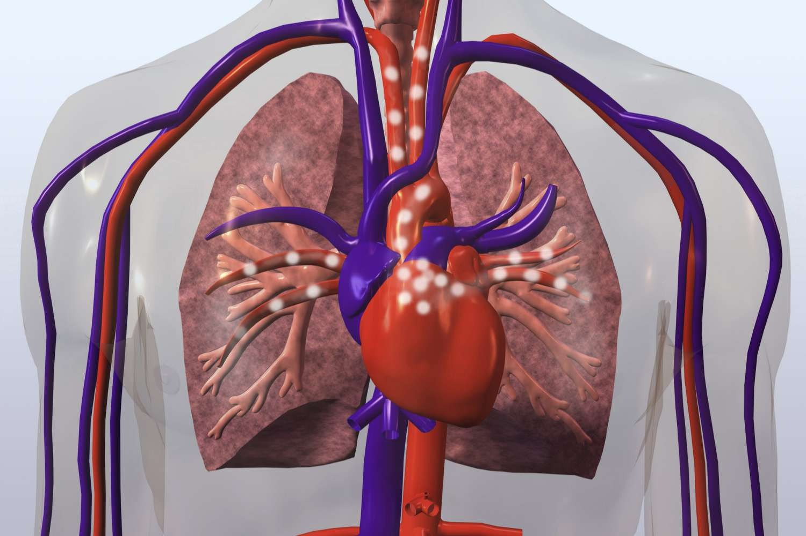

Cum circulă sângele în corp
Inimă
Inima pompează sângele prin corp, aducând oxigen și hrană celulelor, ajutând organele să funcționeze corespunzător.
Plămâni
Plămânii ajută la schimbul de oxigen și dioxid de carbon între sânge și aer, oferind corpului oxigenul de care are nevoie.
Sistem Vascular
Sistemul circulator vascular transportă sângele, oxigenul, substanțele nutritive și hormonii către celule, iar dioxidul de carbon și deșeurile către organele excretoare.